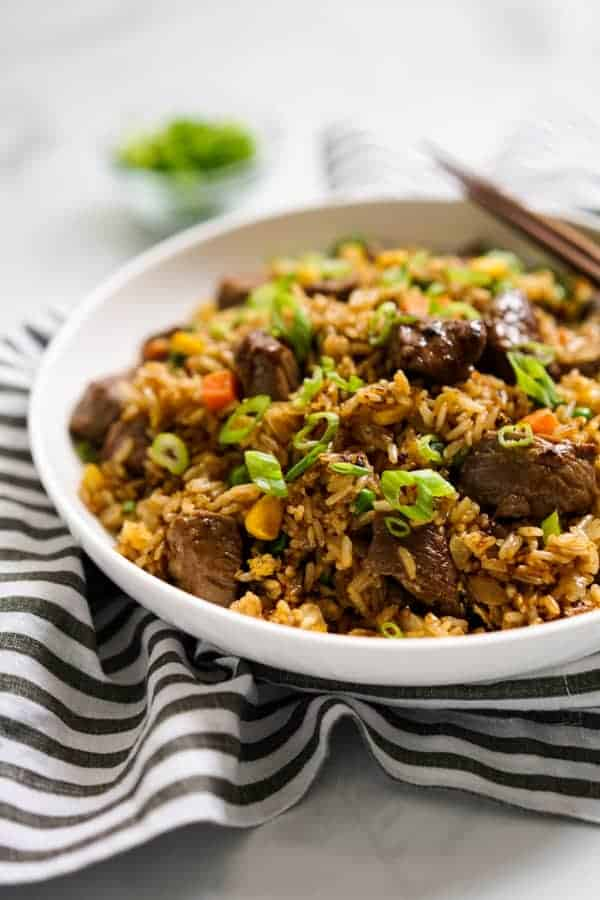

Steak Fried Rice

A delicious recipe that'll take advantage of some "relatively" cheap ingrediants and satisfy any dinner decision.
Ingrediants
- Steak
- Steamed Rice
- Green Onions
- Salt and Pepper
- Teriyaki Sauce
- Eggs
Steps
- Cook and cut up steak into bits
- Crack eggs into steamed rice, preferably in a wok
- Stir and mix in diced green onions
- Add the rest of the ingrediants and stir well